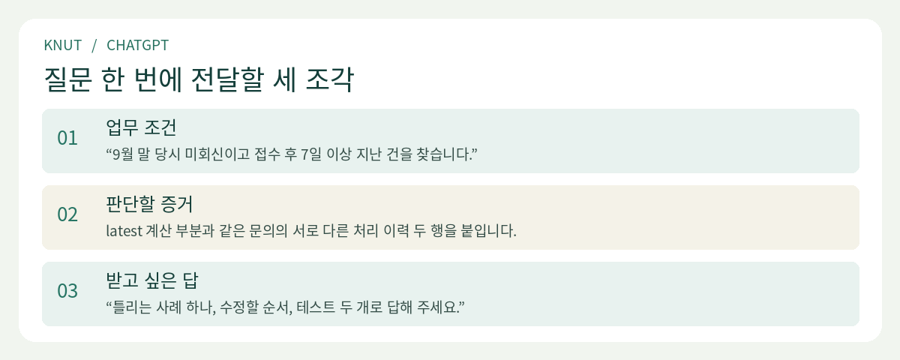

심화 가이드 · 설계와 진단무료 ChatGPT 실전 지시문

질문 한 번에 전달할 세 조각 · 단계 안내도아래 블록은 채팅창에 복사할 수 있는 수업용 지시문입니다. 대괄호에는 내 파일에서 복사한 내용을 넣으세요. 무료 계정에서는 메시지와 도구 사용 한도가 달라질 수 있습니다. 한 번의 요청에 판단할 재료와 원하는 출력 형식을 함께 주면 빠진 정보를 묻는 왕복을 줄일 수 있습니다.
설계하기 · 짧은 문맥 묶음
전체 원장을 첨부하기 전에 열 이름, 정상 행 하나, 예외 행 하나를 붙여 보세요. 1일차에는 같은 문의의 서로 다른 처리일 두 행이 좋습니다.
목표: 지난달 말 기준으로 7일 이상 미회신인 문의를 찾고 싶습니다.
현재 동작: 전체 이력에서 마지막 순번을 먼저 선택합니다.
코드: [day1.py에서 latest를 만드는 줄과 merge 부분]
예시: [같은 문의의 접수일, 처리일, 순번, 상태 두 행]
요청: 현재 방식이 틀리는 사례 1개, 올바른 처리 순서 4단계,
수정 후 확인할 테스트 2개를 주세요. 불명확한 조건이 있다면 한 가지만 물어보세요.
일관된 답이 필요할 때 · 기준 고정
판정 기준은 처리일 ≤ 기준일, 경과일 ≥ 7, 기준일 상태가 회신 완료가 아님입니다.
아래 세 행을 이 규칙으로만 검토하세요. 출력 열은 문의ID | 포함 여부 | 근거입니다.
없는 값은 ‘확인 필요’로 남기고 각 근거에 사용한 날짜를 적으세요.
[예시 행 붙여넣기]
여러 해법이 필요할 때 · 대안 탐색
같은 업무 요청에 대해 접근이 서로 다른 구현안 3개를 제안하세요.
각각 필요한 파일, 변경 범위, 초보자가 확인할 테스트 1개를 표로 정리하세요.
기존 집계 코드를 가장 많이 재사용하는 안을 고르고 이유를 한 문장으로 적으세요.
[day2.py의 집계 부분과 report.py의 함수 정의]
temperature와 top_p는 어떻게 쓰나?
temperature는 지원하는 API 모델에서 다음 토큰 선택의 확률 분포를 조절합니다. 보통 낮추면 높은 확률의 선택에 집중하고 높이면 다양한 선택이 나올 여지가 커집니다. top_p는 확률이 높은 토큰부터 누적 확률로 후보 범위를 정합니다. 예를 들어 0.9는 확률 질량 약 90%를 채우는 후보를 고려한다는 뜻입니다. 무료 ChatGPT의 일반 대화창에 ‘temperature=0.2’ 또는 ‘/top_p 0.9’를 입력해도 실제 샘플링 설정을 지정할 수 없습니다. 위의 ‘기준 고정’과 ‘대안 탐색’은 답변의 형식과 목표를 지시하는 방법입니다. 같은 문장을 반복해도 결과가 항상 같다는 보장은 없습니다.
비교 실험 — 같은 예시 두 행으로 ‘기준 고정’을 두 번 실행해 판정이 일치하는지 대조한 뒤, ‘대안 탐색’으로 바꿔 세 안이 실제로 다른지 비교하세요. API를 별도로 쓰는 심화 실험에서는 해당 모델의 지원 여부를 확인하고 동일 입력에서 temperature 또는 top_p 한 항목씩 바꾸세요. 이 수업은 API 키 없이 진행합니다.
오류가 났을 때 · 한 번에 진단 요청
실행 명령: [실제 명령]
기대 결과: [예: 장기미회신 시트가 추가됨]
실제 결과: [오류의 마지막 줄과 내 파일을 가리키는 줄]
관련 코드: [오류 주변 10~15줄]
가능성이 높은 원인 하나, 이를 확인할 출력 하나, 확인 후 적용할 최소 변경을 순서대로 주세요.
대화가 길어졌을 때 · 인수인계
다음 대화 또는 Copilot에 붙일 작업 메모를 8줄 이내로 정리하세요.
목표, 수정 파일, 확정된 규칙, 이미 확인한 결과, 남은 문제, 다음 테스트를 포함하세요.
추측은 미확인으로 표시하세요.
무료 도구 한도에 도달하면 이미 받은 작업 메모로 로컬 실행과 결과 대조를 계속하세요. 업로드 대신 코드 일부를 붙이는 방법은 첨부 없이 작업하는 방법이며 이용 한도 자체를 늘리지는 않습니다.
무료 플랜 안내 · API 매개변수 설명